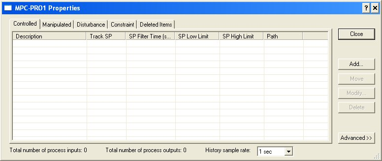
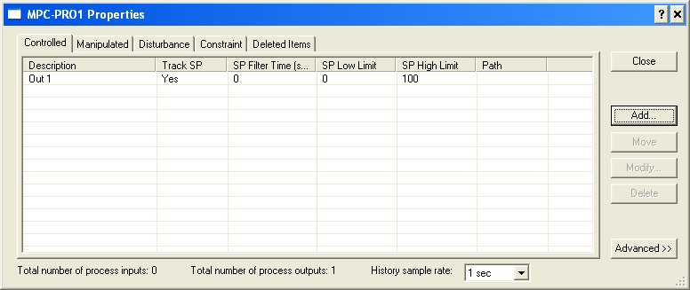
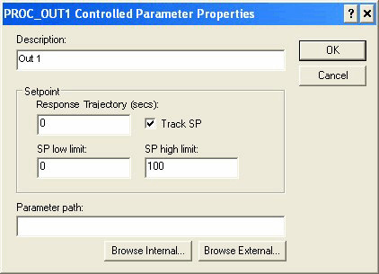
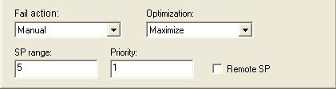
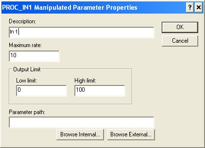
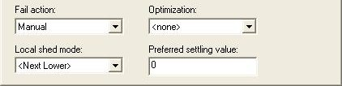
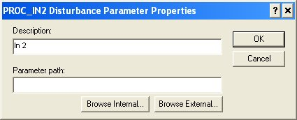
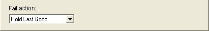
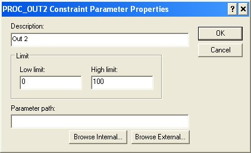
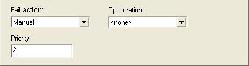

Model Predictive Control Professional function block MPCPro configuraton
Any change in the block configuration requires that you download the block and reconnect to the block from the PredictPro application for the change to be reflected in the block's behavior.
Since the number of inputs and outputs associated with an MPCPro application can vary, the MPCPro block is designed to support a total of forty (40) Disturbance and Manipulated inputs and a total of eighty (80) Controlled and Constraint parameters. The number of controlled parameters must be less than or equal to the number of manipulated parameters. Use the Control Studio application to configure the MPCPro block. To enter configuration information, right-click the MPCPro function block and select Properties to open the Properties dialog. Use this dialog to add Control, Manipulate, Constraint, or Disturbance parameters and enter configuration information.
Refer to the PredictPro application documentation for information on setting the parameters for your process's TSS. Set the History sample rate only from the Properties dialog of the MPCPro function block. Do not use the History Collection dialog.

Select the Controlled, Manipulated, Disturbance, or Constraint tab on this dialog, and then click the Add button to add a new entry. The Controlled tab is selected in the following image.

Once you have added parameters to the MPCPro block, you can modify them from this dialog by selecting a parameter and clicking Modify. A dialog for defining the associated parameters opens.
Configuring controlled parameters
For a Controlled parameter, the following dialog opens.

Description — The parameter name that you want to appear in the PredictPro application and the MPC Operate Pro view. (MPC Operate Pro is built with MPCPro dynamos. The default description name is the input instance number for example, Out 1. It is recommended that you create a new description that contains 14 or fewer characters.
Response Trajectory — The Response Trajectory is an exponential trajectory defined by its filter time constant, current process output, and future required process output (SP). Response Trajectory is used to increase stability by slowing down the controller reaction to CV error. When unmeasured disturbances are significant, Response Trajectory filter time constant values between 1 and 5 times the TSS are recommended.
SP Low Limit — The minimum SP value (in engineering units) that an operator can enter. A setpoint entry that is lower than this limit is truncated to the limit value.
SP High Limit — The maximum SP value (in engineering units) that an operator can enter. A setpoint entry that is greater than this limit is truncated to the limit value.
Track SP — If enabled, the SP tracks the Controlled parameter value when the MPCPro block is in a Target mode of MAN. This option is enabled by default.
Parameter path — The reference to the block output that will provide the Control parameter value. If the block providing this value is contained in the same module as the MPCPro block, select the Browse Internal button to define the parameter path. Otherwise, select the Browse External button to define the parameter path.
When the Advanced button is selected in the Properties dialog, additional information appears at the bottom of the Control parameter dialog as shown below.

- Fail Action - The action to be taken when the input status indicates a BAD input. The actions that can be taken are:
No Action — Take no control action on the measurement value.
Shed Local Modes — Change the downstream blocks associated with the Manipulated parameters to their local mode — as defined by Local Shed mode selection of the Manipulate parameter.
Manual — Change the actual mode of the MPCPro block to Manual until the condition clears.
Simulate Fail Manual — Simulate the measurement input. If the time of simulation exceeds the maximum allowed (based on Time to Steady State), then the MPC actual mode will change to Man until this condition clears.
Simulate Fail Shed Local — Simulate the measurement input. If the time of simulation exceed the maximum allowed (based on Time to Steady State), then the downstream blocks associated with the Manipulated parameters will be forced to their local mode — as defined by Local Shed mode selection of the Manipulate parameter.
- Optimization —The impact of the Control parameter on plant cost or profit. The selections are:
None — Not considered in the objective function. There is no cost or profit associated with this parameter.
Maximize — Indicates that this parameter is associated with profit. Control action is taken to push the parameter up towards its associated setpoint without going above this limit.
Minimize — Indicates that this parameter is associated with cost. Control action is taken to push the parameter down towards its associated setpoint without going below this limit.
Target — Indicates that control action is taken to minimize the deviation of this parameter above and below its setpoint.
SP range —The maximum amount that the optimizer can change the working setpoint used in control from the operator specified setpoint. This value is the SP_DELTA_RANGE parameter, that can also be changed from the MPCPro Controlled Variable Detail Display after download.
Priority —Numeric value that can be assigned to Control and Constraint parameters to indicate relative importance where the smaller number indicates greater importance/priority. If it is not possible for the optimizer to find a solution that satisfies all operating constraint limits within the specified control ranges, then a solution will be found that best satisfies the control ranges and constraint limits that have the highest priority.
Remote SP —The setpoint of the Control parameter will be set by another application or function block that is writing to the associated RCAS_IN(xx) parameter.
Configuring manipulated parameters
For a Manipulated parameter, the following dialog opens.

Description — The parameter name that you want to appear in the PredictPro application and the MPC Operate Pro view. (MPC Operate Pro is built with MPCPro dynamos.) The default description name is the input instance number for example, In 1. It is recommended that you create a new description that contains 14 or fewer characters.
Maximum MV Rate — The maximum rate (in engineering units per second) at which the MPCPro function block can change the Manipulated parameter.
Low Limit — The minimum manipulated parameter value (in engineering units) that an operator can enter. An entry that is lower than this limit is truncated to the limit value.
High Limit — The maximum manipulated parameter value (in engineering units) that an operator can enter. An entry that is greater than this limit is truncated to the limit value.
Parameter Path — The reference to the block input that is written to the manipulate value. Based on this path, the MPCPro block automatically accesses the mode and back calculation output of the downstream block. If the block providing this value is contained in the same module as the MPCPro block, select the Browse Internal button to define the parameter path. Otherwise, select the Browse External button to define the parameter path. Emerson does not recommend cascading the MPC-PRO block to the Bias/Gain or Splitter blocks. These blocks do not have a PV_SCALE parameter so the identified gain has no meaning.
When the Advanced button is selected in the Properties dialog, the additional information appears at the bottom of the Manipulate parameter dialog as shown in the following figure.

- Fail Action — The action to be taken when the feedback from the downstream block contains a status of BAD or Not Invited:
No Action — Maintain the manipulate parameter at its current value with no impact on MPCPro mode.
Shed Local Modes — Change the downstream blocks associated with the Manipulated parameters to their local mode — as defined by Local Shed mode selection of the Manipulate parameter.
Manual — Change the actual mode of the MPCPro block to MAN until the condition clears.
- Optimization — The impact of the manipulate parameter on plant cost or profit. The selections are:
None — Not considered in the objective function. There is no cost or profit associated with this parameter.
Maximize — Indicates that this parameter is associated with profit. Control action is taken to push the manipulated parameter towards its associated high output limit.
Minimize — Indicates that this parameter is associated with cost. Control action is taken to push the manipulated parameter towards its associated low output limit.
PSV — Control action is taken to maintain the manipulated parameter at the configured Preferred Settling Value (PSV) within the degree of freedom allowed by the objective function.
Equalize — Control action is taken to maintain multiple manipulated parameters at the same value (in percent of scale) within the degrees of freedom allowed by the objective function. Note that two or more manipulated parameters must be configured for Equalize if this option is selected. All manipulated variables with Equalize enabled must have the same EU scale.
- Local Shed Mode — The target mode that the downstream block will be forced to when a input or output failure is detected and the Failure action is defined as Shed Local. The selections are:
Next Lower —The mode will be written to the next lower permitted mode of the downstream block. The selection order is:
=>Rout =>Rcas =>Cas >=>Auto =>Man
Last Local — The mode is written to the previous target mode (before switching to MPC control).
ROUT — The mode is written to ROUT.
RCAS — The mode is written to RCAS.
CAS — The mode is written to CAS.
AUTO — The mode is written to AUTO.
MAN — The mode is written to MAN.
Preferred Settling Value — The manipulated parameter value that the control tries to achieve if the optimization selection is PSV.
Configuring disturbance parameters
For a Disturbance parameter, the following configuration dialog appears.

Description — The parameter name that you want to appear in the PredictPro application and the MPC Operate Pro view (MPC Operate Pro is built with MPCPro dynamos.) The default description name is the input instance number for example, In2. It is recommended that you create a new description that contains 14 or fewer characters.
Parameter path — The reference to the block output that provides the Disturbance input value. If the block providing this value is contained in the same module as the MPCPro block, select the Browse Internal button to define the parameter path. Otherwise, select the Browse External button to define the parameter path.
When the Advanced button is selected in the Properties dialog, the additional information appears at the bottom of the Disturbance parameter dialog as shown in the following figure.

- Fail action — the action that should be taken when the Disturbance input has a BAD status. One of the following actions can be selected:
Hold Last Good — Maintain the last value of the Disturbance input that had a status of Good.
Shed Local Modes — Change the downstream blocks associated with the Manipulated parameters to their local mode as defined by the Local Shed Mode selection of the manipulate parameter.
Manual — Change the actual mode of the MPCPro block to manual until the condition clears.
Configuring constraint parameters
For a Constraint parameter, the following configuration dialog appears.

Description — The parameter name that you want to appear in the PredictPro application and the MPC Operate Pro view (MPC Operate Pro is built with MPCPro dynamos.) The default description name is the input instance number, for example, 2nd output. You can create a new description; however, it is recommended that the parameter description contain 14 or fewer characters.
Low Limit — The minimum Constraint target (in engineering units).
High Limit — The maximum Constraint target (in engineering units).
Parameter path — The reference to the block output that provides the Constraint input value. If the block providing this value is contained in the same module as the MPCPro block, select the Browse Internal button to define the parameter path. Otherwise, select the Browse External button to define the parameter path.
When the Advanced button is selected in the Properties dialog, the additional information appears at the bottom of the Constraint parameter dialog as shown in the following figure.

- Fail action — The action to be taken when the input status indicates a BAD input. The actions that can be taken are:
No Action — Take no control action on the measurement value.
Shed Local Modes — Change the downstream blocks associated with the Manipulated parameters to their local mode — as defined by Local Shed mode selection of the Manipulate parameter.
Manual — Change the actual mode of the MPCPro block to Manual until the condition clears.
Simulate Fail Manual — Simulate the measurement input. If the time of simulation exceeds the maximum allowed (based on Time to Steady State), then the MPC actual mode will change to Man until this condition clears.
Simulate Fail Shed Local — Simulate the measurement input. If the time of simulation exceed the maximum allowed (based on Time to Steady State), then the downstream blocks associated with the Manipulated parameters will be forced to their local mode — as defined by Local Shed mode selection of the Manipulate parameter.
- Optimization — The impact of the Control parameter on plant cost or profit. The selections are:
None — The parameter is not included in the objective function. There is no cost or profit associated with the parameter.
Maximize — Indicates that this parameter is associated with profit.
Minimize — Indicates that this parameter is associated with cost.
Priority — Numeric value that can be assigned to Control and Constraint parameters to indicate relative importance where the smaller number indicates greater importance/priority. If it is not possible for the optimizer to find a solution that satisfies all operating constraint limits within the specified control ranges, then a solution will be found that best satisfies the control ranges and constraint limits that have the highest priority.